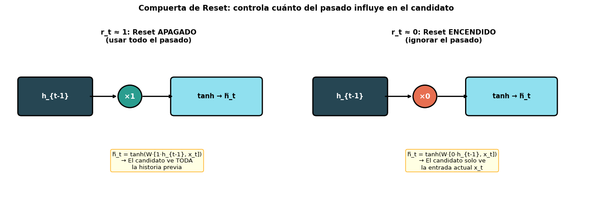
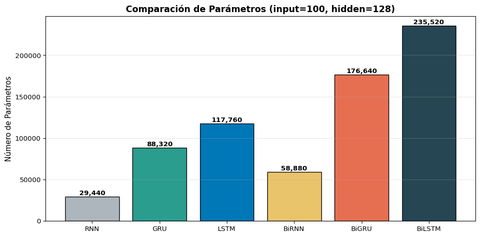
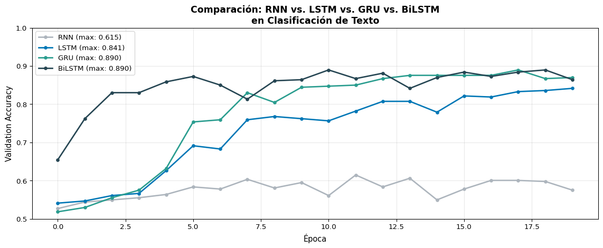
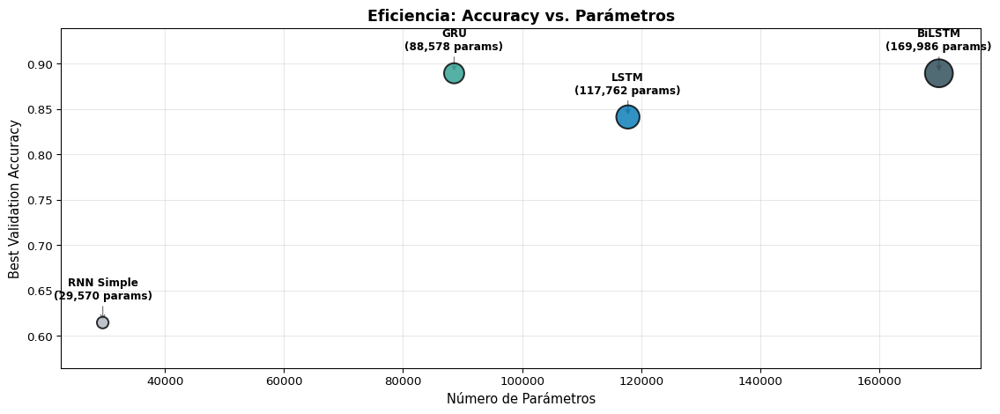

¿Cuánto del estado previo usar para calcular el candidato?
\(z_t\) (actualización)
¿Cuánto del estado nuevo vs. viejo conservar?
La compuerta \(z_t\) es clave: combina las funciones de olvido (\(f_t\)) y entrada (\(i_t\)) de la LSTM en una sola.
La Restricción Elegante
Notemos que \((1-z_t) + z_t = 1\) siempre. Esto significa que el nuevo estado \(h_t\) es una interpolación entre el estado anterior y el candidato. No hay forma de “olvidar todo” y “no escribir nada” — la información siempre se conserva en algún grado.
Paso a Paso: La Compuerta de Reset (\(r_t\))
\[r_t = \sigma(W_r [h_{t-1}, x_t] + b_r)\]
La compuerta de reset decide cuánto del pasado importa para calcular el candidato \(\tilde{h}_t\):
Code
import matplotlib.pyplot as pltimport matplotlib.patches as mpatchesfig, axes = plt.subplots(1, 2, figsize=(14, 4.5))for ax, r_val, title, scenario in [ (axes[0], 1.0, 'r_t ≈ 1: Reset APAGADO\n(usar todo el pasado)', 'h̃_t = tanh(W·[1·h_{t-1}, x_t])\n→ El candidato ve TODA\nla historia previa'), (axes[1], 0.0, 'r_t ≈ 0: Reset ENCENDIDO\n(ignorar el pasado)','h̃_t = tanh(W·[0·h_{t-1}, x_t])\n→ El candidato solo ve\nla entrada actual x_t'),]: ax.set_xlim(-0.5, 8) ax.set_ylim(-0.5, 4) ax.axis('off')# h_{t-1} rect = mpatches.FancyBboxPatch((0, 2.0), 2, 1, boxstyle="round,pad=0.1", facecolor='#264653', edgecolor='black', linewidth=2) ax.add_patch(rect) ax.text(1, 2.5, 'h_{t-1}', ha='center', va='center', fontsize=11, color='white', fontweight='bold')# × r_t color ='#2a9d8f'if r_val ==1.0else'#e76f51' circle = plt.Circle((3.2, 2.5), 0.35, facecolor=color, edgecolor='black', linewidth=2) ax.add_patch(circle) ax.text(3.2, 2.5, f'×{r_val:.0f}', ha='center', va='center', fontsize=12, color='white', fontweight='bold') ax.annotate('', xy=(2.85, 2.5), xytext=(2, 2.5), arrowprops=dict(arrowstyle='->', color='black', lw=2))# Result → tanh rect2 = mpatches.FancyBboxPatch((4.5, 2.0), 2.5, 1, boxstyle="round,pad=0.1", facecolor='#90e0ef', edgecolor='black', linewidth=2) ax.add_patch(rect2) ax.text(5.75, 2.5, 'tanh → h̃_t', ha='center', va='center', fontsize=11, fontweight='bold') ax.annotate('', xy=(4.5, 2.5), xytext=(3.55, 2.5), arrowprops=dict(arrowstyle='->', color='black', lw=2))# Explanation ax.text(4, 0.5, scenario, ha='center', va='center', fontsize=10, bbox=dict(boxstyle='round', facecolor='lightyellow', edgecolor='orange', alpha=0.9)) ax.set_title(title, fontsize=12, fontweight='bold', pad=10)plt.suptitle('Compuerta de Reset: controla cuánto del pasado influye en el candidato', fontsize=13, fontweight='bold', y=1.02)plt.tight_layout()plt.show()

\(r_t \approx 1\): el candidato usa la memoria completa (comportamiento normal)
\(r_t \approx 0\): el candidato ignora la historia — permite “empezar de cero”
Paso a Paso: La Compuerta de Actualización (\(z_t\))
¿Por Qué Esto También Resuelve el Vanishing Gradient?
Cuando \(z_t \approx 0\), tenemos \(h_t \approx h_{t-1}\) — el gradiente pasa directo sin modificarse, igual que la “autopista” \(c_t\) de la LSTM. La GRU logra el mismo efecto con un mecanismo más simple.
import torch.nn as nnd, Dh =100, 128lstm = nn.LSTM(d, Dh, batch_first=True)gru = nn.GRU(d, Dh, batch_first=True)lstm_p =sum(p.numel() for p in lstm.parameters())gru_p =sum(p.numel() for p in gru.parameters())print(f"LSTM parámetros: {lstm_p:>8,}")print(f"GRU parámetros: {gru_p:>8,}")print(f"Ratio GRU/LSTM: {gru_p/lstm_p:.2f}x ({(1-gru_p/lstm_p)*100:.0f}% menos)")
El dataset es pequeño (menos parámetros = menos overfitting)
Necesitas velocidad de entrenamiento
Las secuencias son cortas a medianas
Estás haciendo prototipado rápido
Los recursos computacionales son limitados
Prefiere LSTM cuando…
El dataset es grande (más parámetros aprovechados)
Las secuencias son muy largas (>200 tokens)
Necesitas control fino sobre la memoria (compuertas independientes)
La tarea requiere modelado preciso de dependencias
Es tu modelo de producción final
En la Práctica
Muchos investigadores prueban ambos y eligen el que funcione mejor para su tarea específica. No hay un ganador universal. Chung et al. (2014) encontraron que ambos superan consistentemente a la RNN simple, pero ninguno domina al otro.
Bloque 3: GRU en PyTorch
nn.GRU Paso a Paso
import torchimport torch.nn as nn# Definir GRU — ¡misma interfaz que nn.RNN!gru = nn.GRU( input_size=64, # dimensión de entrada hidden_size=128, # dimensión del estado oculto num_layers=1, batch_first=True)x = torch.randn(3, 10, 64) # (batch=3, seq_len=10, input=64)# Forward pass — igual que nn.RNN (NO devuelve c_n como LSTM)output, h_n = gru(x)print(f"Entrada: {x.shape} → (batch, seq_len, input)")print(f"Salida: {output.shape} → (batch, seq_len, hidden)")print(f"h_n: {h_n.shape} → (layers, batch, hidden)")print(f"\n¿output[:,-1,:] == h_n[0]? {torch.allclose(output[:, -1, :], h_n[0])}")
A diferencia de nn.LSTM que devuelve (output, (h_n, c_n)), la GRU devuelve (output, h_n) — exactamente como nn.RNN. Cambiar de RNN a GRU es literalmente reemplazar nn.RNN por nn.GRU.
La RNN forward y la backward tienen sus propios pesos. No comparten parámetros. Por lo tanto, una BiRNN tiene el doble de parámetros que una RNN unidireccional.
Cualquier tarea donde toda la secuencia está disponible de antemano
❌ No usar BiRNN
Generación de texto (no hemos visto los tokens futuros)
Modelos de lenguaje izquierda→derecha
Traducción en tiempo real (no sabemos el final de la oración)
Cualquier tarea autogregresiva donde la salida se genera token a token
Regla General
Si tu tarea tiene acceso a toda la secuencia de entrada antes de producir la salida, usa BiRNN. Si necesitas generar la salida token a token, usa RNN unidireccional.
Bloque 5: BiRNN en PyTorch
bidirectional=True
PyTorch hace trivial el uso de BiRNNs — solo un argumento extra:
La salida ahora tiene dimensión 2 × hidden_size porque concatena ambas direcciones. El h_n tiene forma (2, batch, hidden) — el índice 0 es forward, el índice 1 es backward.
Extraer el Estado Final de una BiRNN
Para clasificación (many-to-one), necesitamos combinar los estados finales de ambas direcciones:
import torchimport torch.nn as nnbilstm = nn.LSTM(64, 128, batch_first=True, bidirectional=True)x = torch.randn(3, 10, 64)output, (h_n, c_n) = bilstm(x)# h_n[0] = último estado de la dirección FORWARD # h_n[1] = último estado de la dirección BACKWARDh_forward = h_n[0] # (batch, hidden) — procesó x_1 ... x_Th_backward = h_n[1] # (batch, hidden) — procesó x_T ... x_1# Opción 1: Concatenar (más común)h_cat = torch.cat([h_forward, h_backward], dim=1) # (batch, 2×hidden)print(f"Concatenado: {h_cat.shape}")# Opción 2: Sumarh_sum = h_forward + h_backward # (batch, hidden)print(f"Sumado: {h_sum.shape}")# Para la capa lineal final:fc_cat = nn.Linear(2*128, 2) # si concatenamosfc_sum = nn.Linear(128, 2) # si sumamos
import torch.nn as nnimport matplotlib.pyplot as pltimport numpy as npd, Dh =100, 128models = {'RNN': nn.RNN(d, Dh, batch_first=True),'GRU': nn.GRU(d, Dh, batch_first=True),'LSTM': nn.LSTM(d, Dh, batch_first=True),'BiRNN': nn.RNN(d, Dh, batch_first=True, bidirectional=True),'BiGRU': nn.GRU(d, Dh, batch_first=True, bidirectional=True),'BiLSTM': nn.LSTM(d, Dh, batch_first=True, bidirectional=True),}names =list(models.keys())params = [sum(p.numel() for p in m.parameters()) for m in models.values()]fig, ax = plt.subplots(figsize=(10, 5))colors = ['#adb5bd', '#2a9d8f', '#0077b6', '#e9c46a', '#e76f51', '#264653']bars = ax.bar(names, params, color=colors, edgecolor='black', linewidth=1)for bar, p inzip(bars, params): ax.text(bar.get_x() + bar.get_width()/2., bar.get_height() +2000,f'{p:,}', ha='center', fontsize=10, fontweight='bold')ax.set_ylabel('Número de Parámetros', fontsize=11)ax.set_title(f'Comparación de Parámetros (input={d}, hidden={Dh})', fontsize=13, fontweight='bold')ax.grid(True, alpha=0.3, axis='y')plt.tight_layout()plt.show()

Experimento: Clasificación de Texto
Comparemos las 4 variantes principales en la misma tarea:
Code
import torchimport torch.nn as nnimport numpy as npfrom sklearn.datasets import fetch_20newsgroupsfrom sklearn.model_selection import train_test_splitfrom collections import Counterimport matplotlib.pyplot as plt# ---------- Datos ----------categories = ['sci.space', 'talk.politics.misc']data = fetch_20newsgroups(subset='all', categories=categories, remove=('headers', 'footers'))texts, labels = data.data, data.targetdef simple_tokenize(text, max_len=100):return text.lower().split()[:max_len]all_tokens = [t for text in texts for t in simple_tokenize(text)]word_counts = Counter(all_tokens)vocab_list = ['<pad>', '<unk>'] + [w for w, c in word_counts.most_common(5000)]word2idx = {w: i for i, w inenumerate(vocab_list)}def encode(text, max_len=100): tokens = simple_tokenize(text, max_len) ids = [word2idx.get(t, 1) for t in tokens] ids += [0] * (max_len -len(ids))return idsX = torch.tensor([encode(t) for t in texts])y = torch.tensor(labels)X_train, X_val, y_train, y_val = train_test_split(X, y, test_size=0.2, random_state=42)train_ds = torch.utils.data.TensorDataset(X_train, y_train)train_loader = torch.utils.data.DataLoader(train_ds, batch_size=32, shuffle=True)# ---------- Modelo genérico ----------class TextClassifier(nn.Module):def__init__(self, vocab_size, embed_dim, hidden_dim, n_classes, rnn_type='LSTM', bidirectional=False):super().__init__()self.embedding = nn.Embedding(vocab_size, embed_dim, padding_idx=0)self.bidirectional = bidirectionalself.rnn_type = rnn_type rnn_cls = {'RNN': nn.RNN, 'LSTM': nn.LSTM, 'GRU': nn.GRU}[rnn_type]self.rnn = rnn_cls(embed_dim, hidden_dim, batch_first=True, bidirectional=bidirectional) fc_dim = hidden_dim *2if bidirectional else hidden_dimself.fc = nn.Linear(fc_dim, n_classes)self.dropout = nn.Dropout(0.3)def forward(self, x): emb =self.embedding(x) out =self.rnn(emb)ifself.rnn_type =='LSTM': _, (h_n, _) = outelse: _, h_n = outifself.bidirectional: h = torch.cat([h_n[0], h_n[1]], dim=1)else: h = h_n.squeeze(0)returnself.fc(self.dropout(h))# ---------- Entrenar ----------configs = [ ('RNN', 'RNN', False), ('LSTM', 'LSTM', False), ('GRU', 'GRU', False), ('BiLSTM', 'LSTM', True),]all_results = {}for name, rnn_type, bidir in configs: torch.manual_seed(42) model = TextClassifier(len(vocab_list), 64, 64, 2, rnn_type=rnn_type, bidirectional=bidir) optimizer = torch.optim.Adam(model.parameters(), lr=0.001) criterion = nn.CrossEntropyLoss() val_accs = []for epoch inrange(20): model.train()for xb, yb in train_loader: optimizer.zero_grad() loss = criterion(model(xb), yb) loss.backward() torch.nn.utils.clip_grad_norm_(model.parameters(), 1.0) optimizer.step() model.eval()with torch.no_grad(): val_acc = (model(X_val).argmax(1) == y_val).float().mean().item() val_accs.append(val_acc) all_results[name] = val_accs n_params =sum(p.numel() for p in model.parameters())print(f"{name:>7s} | Params: {n_params:>8,} | Best Val Acc: {max(val_accs):.4f}")# ---------- Gráfica ----------fig, ax = plt.subplots(figsize=(12, 5))colors = {'RNN': '#adb5bd', 'LSTM': '#0077b6', 'GRU': '#2a9d8f', 'BiLSTM': '#264653'}for name, accs in all_results.items(): ax.plot(accs, '-o', color=colors[name], label=f'{name} (max: {max(accs):.3f})', linewidth=2, markersize=4)ax.set_xlabel('Época', fontsize=11)ax.set_ylabel('Validation Accuracy', fontsize=11)ax.set_title('Comparación: RNN vs. LSTM vs. GRU vs. BiLSTM\nen Clasificación de Texto', fontsize=13, fontweight='bold')ax.legend(fontsize=10)ax.set_ylim(0.5, 1.0)ax.grid(True, alpha=0.3)plt.tight_layout()plt.show()
RNN | Params: 328,578 | Best Val Acc: 0.6147
LSTM | Params: 353,538 | Best Val Acc: 0.8414
GRU | Params: 345,218 | Best Val Acc: 0.8895
BiLSTM | Params: 386,946 | Best Val Acc: 0.8895

Resumen de la Comparación
Code
import matplotlib.pyplot as pltimport numpy as npfig, ax = plt.subplots(figsize=(12, 5))models_summary = {'RNN Simple': {'params': 29570, 'best_acc': max(all_results['RNN']), 'color': '#adb5bd'},'LSTM': {'params': 117762, 'best_acc': max(all_results['LSTM']), 'color': '#0077b6'},'GRU': {'params': 88578, 'best_acc': max(all_results['GRU']), 'color': '#2a9d8f'},'BiLSTM': {'params': 169986, 'best_acc': max(all_results['BiLSTM']), 'color': '#264653'},}names =list(models_summary.keys())accs = [v['best_acc'] for v in models_summary.values()]params = [v['params'] for v in models_summary.values()]colors = [v['color'] for v in models_summary.values()]# Bubble chart: x=params, y=acc, size=paramsscatter = ax.scatter(params, accs, s=[p/300for p in params], c=colors, edgecolors='black', linewidth=1.5, alpha=0.8, zorder=5)for name, p, a inzip(names, params, accs): ax.annotate(f'{name}\n({p:,} params)', xy=(p, a), xytext=(0, 20), textcoords='offset points', ha='center', fontsize=9, fontweight='bold', arrowprops=dict(arrowstyle='->', color='gray', lw=1))ax.set_xlabel('Número de Parámetros', fontsize=11)ax.set_ylabel('Best Validation Accuracy', fontsize=11)ax.set_title('Eficiencia: Accuracy vs. Parámetros', fontsize=13, fontweight='bold')ax.grid(True, alpha=0.3)ax.set_ylim(min(accs) -0.05, max(accs) +0.05)plt.tight_layout()plt.show()

Hallazgos Típicos
GRU logra rendimiento similar a LSTM con ~25% menos parámetros
BiLSTM generalmente obtiene el mejor rendimiento, pero al mayor costo
RNN simple se queda atrás, especialmente con secuencias largas
El beneficio de bidireccionalidad depende de la tarea
Resumen
Lo Que Aprendimos Hoy
Conceptos
GRU: 2 compuertas (\(r_t\), \(z_t\)), 1 estado
Actualización por interpolación: \(h_t = (1-z_t)h_{t-1} + z_t\tilde{h}_t\)